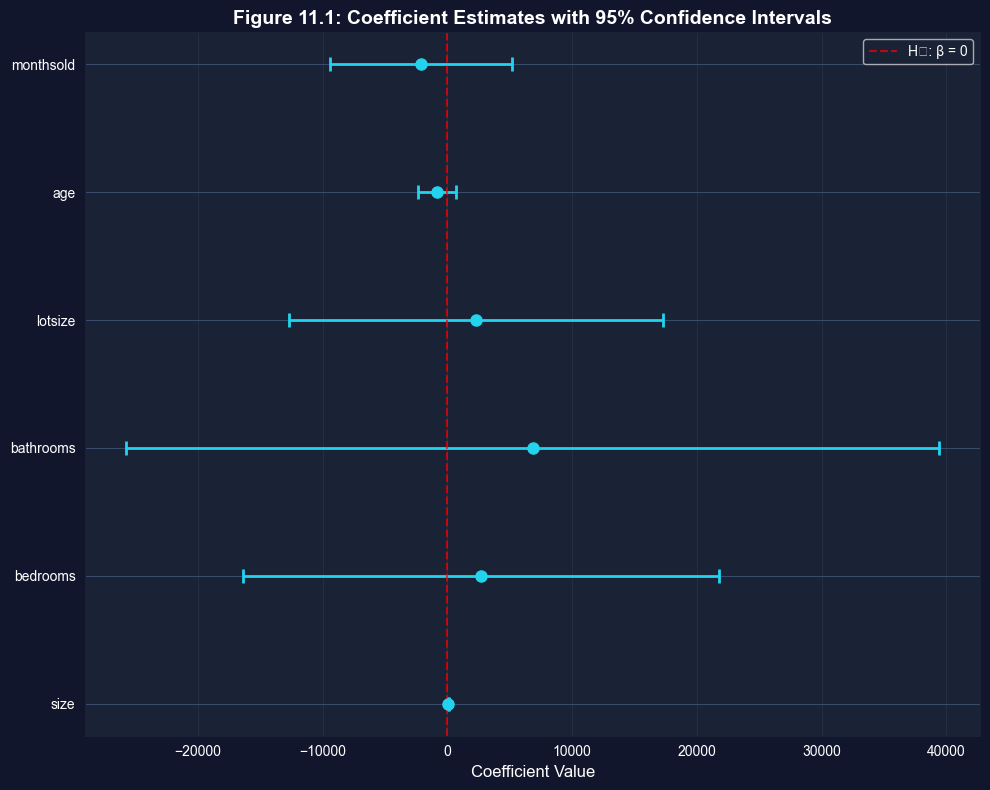
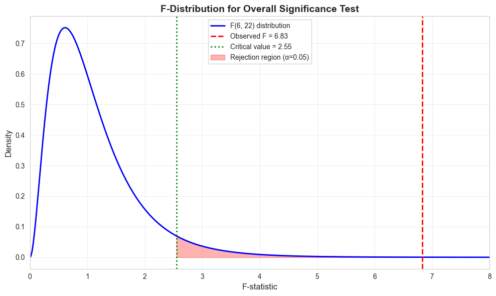
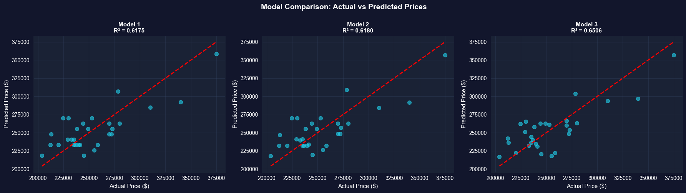

This notebook provides an interactive introduction to extending inference to models with multiple regressors. All code runs directly in Google Colab without any local setup.
Open In Colab
Chapter Overview
This chapter extends statistical inference to models with multiple regressors. You’ll learn to construct confidence intervals, conduct hypothesis tests on individual and groups of parameters, and present regression results professionally.
Learning Objectives:
By the end of this chapter, you will be able to:
Extend statistical inference from bivariate regression to multiple regression with \(k\) regressors
Understand the \(t\)-statistic for individual coefficients following a \(T(n-k)\) distribution
Calculate and interpret standard errors for OLS slope coefficients: \(se(b_j) = s_e / \sqrt{\sum \widetilde{x}_{ji}^2}\)
Construct confidence intervals using \(b_j \pm t_{n-k, \alpha/2} \times se(b_j)\)
Conduct hypothesis tests on individual parameters to determine statistical significance
Understand and apply F-tests for joint hypotheses involving multiple parameter restrictions
Interpret the F distribution with two degrees of freedom (\(v_1\) = restrictions, \(v_2 = n-k\))
Perform the test of overall statistical significance using \(H_0: \beta_2 = \cdots = \beta_k = 0\)
Test whether subsets of regressors are jointly significant using nested model comparisons
Present regression results in standard formats (standard errors, t-statistics, p-values, confidence intervals, asterisks)
Dataset used: - AED_HOUSE.DTA: 29 houses sold in Davis, California (1999)
Key economic questions: - Is house size a statistically significant predictor of price? - Are additional variables (bedrooms, bathrooms, age) jointly significant? - What is a reasonable range for the effect of size on price?
Chapter outline: - 11.1 Properties of the Least Squares Estimator - 11.2 Estimators of Model Parameters - 11.3 Confidence Intervals - 11.4 Hypothesis Tests on a Single Parameter - 11.5 Joint Hypothesis Tests - 11.6 F Statistic Under Assumptions 1-4 - 11.7 Presentation of Regression Results - Key Takeaways - Practice Exercises - Case Studies
Estimated time: 60-90 minutes
Setup
First, we import the necessary Python packages and configure the environment for reproducibility. All data will stream directly from GitHub.
# Import required packagesimport numpy as npimport pandas as pdimport matplotlib.pyplot as pltimport seaborn as snsimport statsmodels.api as smfrom statsmodels.formula.api import olsfrom scipy import statsfrom statsmodels.stats.anova import anova_lmimport randomimport os# Set random seeds for reproducibilityRANDOM_SEED =42random.seed(RANDOM_SEED)np.random.seed(RANDOM_SEED)os.environ['PYTHONHASHSEED'] =str(RANDOM_SEED)# GitHub data URLGITHUB_DATA_URL ="https://raw.githubusercontent.com/quarcs-lab/data-open/master/AED/"# Set plotting stylesns.set_style("whitegrid")plt.rcParams['figure.figsize'] = (10, 6)print("Setup complete! Ready to explore statistical inference for multiple regression.")
Setup complete! Ready to explore statistical inference for multiple regression.
Data Preparation
We’ll work with the same house price dataset from Chapter 10, which contains information on 29 houses sold in Davis, California in 1999.
# Read in the house datadata_house = pd.read_stata(GITHUB_DATA_URL +'AED_HOUSE.DTA')print("Data summary:")data_summary = data_house.describe()print(data_summary)print("\nFirst few observations:")print(data_house[['price', 'size', 'bedrooms', 'bathrooms', 'lotsize', 'age', 'monthsold']].head())
Before conducting inference, we need to understand the statistical properties of the OLS estimator. Under the classical linear regression assumptions, OLS has desirable properties.
Classical Assumptions (1-4):
Linearity: The population model is linear in parameters: \[y = \beta_1 + \beta_2 x_2 + \beta_3 x_3 + \cdots + \beta_k x_k + u\]
Random sampling: Data are randomly sampled from the population
No perfect collinearity: No exact linear relationships among regressors
Zero conditional mean: \(E[u | x_2, \ldots, x_k] = 0\)
Properties of OLS under these assumptions:
Unbiased: \(E[\hat{\beta}_j] = \beta_j\) (centered on true value)
Consistent: \(\hat{\beta}_j \rightarrow \beta_j\) as \(n \rightarrow \infty\)
Efficient (BLUE): Best Linear Unbiased Estimator (Gauss-Markov Theorem)
Has minimum variance among all linear unbiased estimators
\(\tilde{x}_{ji}\) is the residual from regressing \(x_j\) on all other regressors
Smaller standard errors occur when:
Model fits well (small \(s_e\))
Large sample size (large \(\sum \tilde{x}_{ji}^2\))
Variable \(x_j\) has high variation after controlling for other regressors
print("="*70)print("11.1 PROPERTIES OF THE LEAST SQUARES ESTIMATOR")print("="*70)print("\nUnder assumptions 1-4:")print(" 1. Linearity: y = β₀ + β₁x₁ + ... + βₖxₖ + u")print(" 2. Random sampling from population")print(" 3. No perfect collinearity")print(" 4. Zero conditional mean: E[u|X] = 0")print("\nThe OLS estimator is:")print(" - Unbiased: E[β̂] = β")print(" - Consistent: plim(β̂) = β")print(" - Efficient (BLUE under Gauss-Markov theorem)")print("\nThese properties allow us to conduct valid statistical inference.")
======================================================================
11.1 PROPERTIES OF THE LEAST SQUARES ESTIMATOR
======================================================================
Under assumptions 1-4:
1. Linearity: y = β₀ + β₁x₁ + ... + βₖxₖ + u
2. Random sampling from population
3. No perfect collinearity
4. Zero conditional mean: E[u|X] = 0
The OLS estimator is:
- Unbiased: E[β̂] = β
- Consistent: plim(β̂) = β
- Efficient (BLUE under Gauss-Markov theorem)
These properties allow us to conduct valid statistical inference.
Key Concept 11.1: Classical Assumptions for Statistical Inference
Four assumptions underpin valid inference in multiple regression: (1) linearity in parameters, (2) random sampling, (3) no perfect collinearity among regressors, and (4) zero conditional mean of errors \(E[u|X] = 0\). Under these assumptions, OLS is unbiased (\(E[b_j] = \beta_j\)), consistent, and the Best Linear Unbiased Estimator (BLUE) by the Gauss-Markov theorem.
11.2: Estimators of Model Parameters
Now we estimate the full multiple regression model and examine the parameter estimates, standard errors, and related statistics.
Coefficients (\(\hat{\beta}_j\)): Point estimates of partial effects
Standard errors (\(se(\hat{\beta}_j)\)): Measure of estimation uncertainty
t-statistics: Coefficient divided by standard error
p-values: Probability of observing such extreme values under \(H_0: \beta_j = 0\)
Root MSE (\(s_e\)): Standard deviation of residuals, measures typical prediction error
# Full multiple regression modelmodel_full = ols('price ~ size + bedrooms + bathrooms + lotsize + age + monthsold', data=data_house).fit()print("="*70)print("11.2 ESTIMATORS OF MODEL PARAMETERS")print("="*70)print("\nFull Multiple Regression Results:")print(model_full.summary())
======================================================================
11.2 ESTIMATORS OF MODEL PARAMETERS
======================================================================
Full Multiple Regression Results:
OLS Regression Results
==============================================================================
Dep. Variable: price R-squared: 0.651
Model: OLS Adj. R-squared: 0.555
Method: Least Squares F-statistic: 6.826
Date: Wed, 21 Jan 2026 Prob (F-statistic): 0.000342
Time: 15:15:57 Log-Likelihood: -330.74
No. Observations: 29 AIC: 675.5
Df Residuals: 22 BIC: 685.1
Df Model: 6
Covariance Type: nonrobust
==============================================================================
coef std err t P>|t| [0.025 0.975]
------------------------------------------------------------------------------
Intercept 1.378e+05 6.15e+04 2.242 0.035 1.03e+04 2.65e+05
size 68.3694 15.389 4.443 0.000 36.454 100.285
bedrooms 2685.3151 9192.526 0.292 0.773 -1.64e+04 2.17e+04
bathrooms 6832.8800 1.57e+04 0.435 0.668 -2.58e+04 3.94e+04
lotsize 2303.2214 7226.535 0.319 0.753 -1.27e+04 1.73e+04
age -833.0386 719.335 -1.158 0.259 -2324.847 658.770
monthsold -2088.5036 3520.898 -0.593 0.559 -9390.399 5213.392
==============================================================================
Omnibus: 1.317 Durbin-Watson: 1.259
Prob(Omnibus): 0.518 Jarque-Bera (JB): 0.980
Skew: 0.151 Prob(JB): 0.612
Kurtosis: 2.152 Cond. No. 2.59e+04
==============================================================================
Notes:
[1] Standard Errors assume that the covariance matrix of the errors is correctly specified.
[2] The condition number is large, 2.59e+04. This might indicate that there are
strong multicollinearity or other numerical problems.
Interpreting the Regression Results
What these results tell us:
The regression output reveals several important findings about the house price data:
Size coefficient = $68.37 (p < 0.001): Each additional square foot increases house price by $68.37 on average, holding all other variables constant. This effect is highly statistically significant (p = 0.0002), meaning we can be very confident this relationship is not due to chance.
Other variables are not statistically significant:
Bedrooms coefficient = $2,685 (p = 0.773): Surprisingly, the number of bedrooms doesn’t significantly affect price once we control for size. The p-value of 0.773 means we cannot reject the hypothesis that this coefficient is zero.
Bathrooms coefficient = $6,833 (p = 0.668): Similarly, bathrooms show no significant effect.
Age coefficient = -$833 (p = 0.259): Older homes tend to sell for less, but this effect is not statistically significant.
Model fit: R² = 0.651: The model explains 65.1% of the variation in house prices, which is quite good for cross-sectional real estate data.
Overall F-statistic = 6.83 (p = 0.0003): The model as a whole is highly significant, meaning at least one of our predictors has a real effect on price.
Economic Interpretation:
Size dominates all other house characteristics in determining price in this market. Features like number of bedrooms and bathrooms don’t add explanatory power beyond what size already captures. This likely reflects multicollinearity—larger houses naturally tend to have more bedrooms and bathrooms, so once we control for size, these other features provide little additional information.
The large standard errors on most coefficients (relative to the coefficient values) suggest imprecise estimation, common in small samples (n=29) with correlated predictors.
Model Diagnostics
Let’s extract and display key model diagnostics to understand the estimation.
Key Concept 11.2: Precision of Coefficient Estimates
The standard error \(se(b_j) = s_e / \sqrt{\sum \widetilde{x}_{ji}^2}\) reveals what makes estimates precise: (1) a well-fitting model (small \(s_e\)), (2) large sample size, (3) high variation in \(x_j\) after controlling for other regressors, and (4) low multicollinearity. When regressors are highly correlated, \(\sum \widetilde{x}_{ji}^2\) shrinks and standard errors inflate.
Economic Interpretation
Key findings:
Size coefficient (≈ $68.37): Each additional square foot increases house price by approximately $68, holding other factors constant.
Statistical significance: Only the size variable appears statistically significant at conventional levels (p < 0.05).
Other variables: Bedrooms, bathrooms, lot size, age, and month sold show large standard errors relative to their coefficients, suggesting imprecise estimates.
This pattern is common in small samples with correlated regressors (multicollinearity).
Now that we understand the properties and interpretation of OLS estimates, let’s quantify uncertainty through confidence intervals.
11.3: Confidence Intervals
A confidence interval provides a range of plausible values for a population parameter.
where: - \(\hat{\beta}_j\) is the coefficient estimate - \(t_{n-k, \alpha/2}\) is the critical value from Student’s t-distribution - \(se(\hat{\beta}_j)\) is the standard error
95% confidence interval (approximate):
\[\hat{\beta}_j \pm 2 \times se(\hat{\beta}_j)\]
Interpretation: If we repeatedly sampled from the population and constructed 95% CIs, approximately 95% would contain the true parameter value.
Key points: - Narrower intervals indicate more precise estimates - If the interval excludes zero, the coefficient is statistically significant at that level
Interpreting the Confidence Intervals
What these confidence intervals tell us:
Looking at the 95% confidence intervals, we can identify which variables have statistically significant effects:
Size: [$36.45, $100.29] - This interval excludes zero, confirming that size has a statistically significant positive effect on price. We are 95% confident that each additional square foot increases price by between $36 and $100.
Intercept: [$10,321, $265,262] - The wide interval reflects high uncertainty about the base price level, but it excludes zero.
All other variables: The confidence intervals for bedrooms, bathrooms, lotsize, age, and monthsold all contain zero, which means these coefficients are not statistically significant at the 5% level.
Practical Meaning:
If we repeatedly sampled 29 houses from this market and calculated 95% confidence intervals, approximately 95% of those intervals would contain the true population parameter. For the size coefficient, this means we’re quite certain about its effect—even in the worst case (lower bound), an extra square foot adds at least $36 to the price.
The fact that only the size interval excludes zero provides strong evidence that, in this dataset, size is the only reliable predictor of house prices among the variables we measured.
Let’s manually calculate the confidence interval for the size coefficient to understand the mechanics.
# Detailed confidence interval calculation for 'size'coef_size = model_full.params['size']se_size = model_full.bse['size']t_crit = stats.t.ppf(0.975, df) # 97.5th percentile for two-sided 95% CIci_lower = coef_size - t_crit * se_sizeci_upper = coef_size + t_crit * se_sizeprint("Manual calculation for 'size' coefficient:")print(f" Coefficient: ${coef_size:.2f}")print(f" Standard error: ${se_size:.2f}")print(f" Degrees of freedom: {df}")print(f" Critical t-value (α=0.05): {t_crit:.4f}")print(f" Margin of error: {t_crit * se_size:.2f}")print(f" 95% CI: [${ci_lower:.2f}, ${ci_upper:.2f}]")print("\nInterpretation:")print(f"We are 95% confident that each additional square foot increases")print(f"house price by between ${ci_lower:.2f} and ${ci_upper:.2f}.")
Manual calculation for 'size' coefficient:
Coefficient: $68.37
Standard error: $15.39
Degrees of freedom: 22
Critical t-value (α=0.05): 2.0739
Margin of error: 31.92
95% CI: [$36.45, $100.29]
Interpretation:
We are 95% confident that each additional square foot increases
house price by between $36.45 and $100.29.
Comprehensive Table with Confidence Intervals
# Create comprehensive coefficient tableprint("="*70)print("Comprehensive Coefficient Table with 95% Confidence Intervals")print("="*70)coef_table_full = pd.DataFrame({'Coefficient': model_full.params,'Std. Error': model_full.bse,'t-statistic': model_full.tvalues,'p-value': model_full.pvalues,'CI Lower': conf_int.iloc[:, 0],'CI Upper': conf_int.iloc[:, 1]})print(coef_table_full)print("\nNote: Coefficients with CIs that exclude zero are statistically significant at 5%.")
======================================================================
Comprehensive Coefficient Table with 95% Confidence Intervals
======================================================================
Coefficient Std. Error t-statistic p-value CI Lower \
Intercept 137791.065699 61464.951869 2.241783 0.035387 10320.557398
size 68.369419 15.389472 4.442610 0.000205 36.453608
bedrooms 2685.315122 9192.525674 0.292119 0.772932 -16378.816300
bathrooms 6832.880015 15721.191544 0.434629 0.668065 -25770.875723
lotsize 2303.221371 7226.535205 0.318717 0.752947 -12683.695364
age -833.038602 719.334544 -1.158068 0.259254 -2324.847139
monthsold -2088.503625 3520.897859 -0.593174 0.559114 -9390.398871
CI Upper
Intercept 265261.573999
size 100.285230
bedrooms 21749.446543
bathrooms 39436.635753
lotsize 17290.138107
age 658.769936
monthsold 5213.391620
Note: Coefficients with CIs that exclude zero are statistically significant at 5%.
Key Concept 11.3: Confidence Intervals in Multiple Regression
A 95% confidence interval \(b_j \pm t_{n-k, 0.025} \times se(b_j)\) provides a range of plausible values for \(\beta_j\). If the interval excludes zero, the coefficient is statistically significant at 5%. Narrower intervals indicate more precise estimation, which improves with larger samples and lower multicollinearity.
Interpreting the Hypothesis Test Result
What this test tells us:
We tested whether the size coefficient equals 50 (H₀: β_size = 50):
t-statistic = 1.19: This measures how many standard errors our estimate ($68.37) is away from the hypothesized value (50). The difference is 1.19 standard errors.
p-value = 0.245: This is the probability of observing a coefficient as extreme as $68.37 (or more extreme) if the true value were actually $50. A p-value of 0.245 means there’s about a 25% chance we’d see this result by random sampling variation alone.
Decision: Since p = 0.245 > 0.05, we fail to reject H₀ at the 5% significance level.
Economic Interpretation:
The data are consistent with the hypothesis that each square foot adds $50 to house price. Even though our point estimate is $68.37, the difference from $50 is not statistically significant. This doesn’t mean β = 50 is correct—it simply means our data don’t provide strong enough evidence to rule it out.
This illustrates an important principle: failing to reject H₀ is NOT the same as proving H₀ is true. We simply lack sufficient evidence to reject it given our sample size and estimation precision.
11.4: Hypothesis Tests on a Single Parameter
Hypothesis testing allows us to make formal inferences about population parameters.
This tests whether variable \(x_j\) has any relationship with \(y\) after controlling for other regressors.
Example: Test whether the size coefficient equals 50.
print("="*70)print("11.4 HYPOTHESIS TESTS ON A SINGLE PARAMETER")print("="*70)# Test H₀: β_size = 50 vs H₁: β_size ≠ 50null_value =50t_stat_50 = (coef_size - null_value) / se_sizep_value_50 =2* (1- stats.t.cdf(abs(t_stat_50), df))print(f"\nTest: H₀: β_size = {null_value} vs H₁: β_size ≠ {null_value}")print(f" Coefficient estimate: ${coef_size:.2f}")print(f" Standard error: ${se_size:.2f}")print(f" t-statistic: {t_stat_50:.4f}")print(f" p-value: {p_value_50:.4f}")print(f" Critical value (α=0.05): ±{t_crit:.4f}")ifabs(t_stat_50) > t_crit:print(f"\nResult: Reject H₀ at 5% significance level")print(f" Conclusion: The size coefficient is significantly different from {null_value}.")else:print(f"\nResult: Fail to reject H₀ at 5% significance level")print(f" Conclusion: The data are consistent with β_size = {null_value}.")
======================================================================
11.4 HYPOTHESIS TESTS ON A SINGLE PARAMETER
======================================================================
Test: H₀: β_size = 50 vs H₁: β_size ≠ 50
Coefficient estimate: $68.37
Standard error: $15.39
t-statistic: 1.1936
p-value: 0.2453
Critical value (α=0.05): ±2.0739
Result: Fail to reject H₀ at 5% significance level
Conclusion: The data are consistent with β_size = 50.
Test of Statistical Significance (β = 0)
The most common hypothesis test examines whether a coefficient is zero.
# Test H₀: β_size = 0 (statistical significance)print("="*70)print("Test of Statistical Significance: H₀: β_size = 0")print("="*70)t_stat_zero = coef_size / se_sizep_value_zero = model_full.pvalues['size']print(f"\n t-statistic: {t_stat_zero:.4f}")print(f" p-value: {p_value_zero:.6f}")print(f" Critical value (α=0.05): ±{t_crit:.4f}")if p_value_zero <0.05:print(f"\nResult: Reject H₀ - Size is statistically significant at 5% level")print(f" Interpretation: House size has a statistically significant effect on price.")else:print(f"\nResult: Fail to reject H₀ - Size is not statistically significant")
======================================================================
Test of Statistical Significance: H₀: β_size = 0
======================================================================
t-statistic: 4.4426
p-value: 0.000205
Critical value (α=0.05): ±2.0739
Result: Reject H₀ - Size is statistically significant at 5% level
Interpretation: House size has a statistically significant effect on price.
Key Concept 11.4: Tests of Statistical Significance
The most common hypothesis test examines \(H_0: \beta_j = 0\) — whether variable \(x_j\) has any partial effect on \(y\). The \(t\)-statistic \(t = b_j/se(b_j)\) measures how many standard errors the estimate is from zero. Reject \(H_0\) when \(|t| > t_{\text{critical}}\) or equivalently when the \(p\)-value \(< \alpha\).
Using statsmodels t_test
Python’s statsmodels package provides convenient methods for hypothesis testing.
Interpreting the Overall F-test
What this F-test tells us:
The overall F-test examines whether our model has any explanatory power at all:
Null hypothesis: All slope coefficients equal zero (β₂ = β₃ = … = β₇ = 0)
Alternative: At least one coefficient is non-zero
Results:
F-statistic = 6.83: This compares the explained variation to unexplained variation
p-value = 0.0003: Extremely small probability of observing such a large F-statistic if all coefficients were truly zero
Critical value = 2.55: Our F-statistic (6.83) far exceeds this threshold
Decision: Reject H₀ - The model is highly statistically significant.
Economic Interpretation:
This result tells us that at least one of our house characteristics (size, bedrooms, bathrooms, lotsize, age, monthsold) has a real relationship with price. Given that we already know size is significant from individual t-tests, this makes sense.
However, this test doesn’t tell us which variables matter—just that the model as a whole provides useful information for predicting house prices. The very small p-value (0.0003) gives us high confidence that our model captures real economic relationships, not just random noise.
# Using statsmodels t_testprint("="*70)print("Hypothesis test using statsmodels t_test:")print("="*70)hypothesis =f'size = {null_value}'t_test_result = model_full.t_test(hypothesis)print(t_test_result)print("\nThis confirms our manual calculation.")
======================================================================
Hypothesis test using statsmodels t_test:
======================================================================
Test for Constraints
==============================================================================
coef std err t P>|t| [0.025 0.975]
------------------------------------------------------------------------------
c0 68.3694 15.389 1.194 0.245 36.454 100.285
==============================================================================
This confirms our manual calculation.
Interpreting the Joint Test of Subset Variables
What this joint test tells us:
This F-test asks: “Can we exclude bedrooms, bathrooms, lotsize, age, and monthsold from the model and just keep size?”
Results:
F-statistic = 0.42: Very small F-statistic
p-value = 0.832: Very high p-value (83.2%)
Critical value = 2.66: Our F-statistic (0.42) is far below this threshold
Decision: Fail to reject H₀ - These five variables are NOT jointly significant.
Economic Interpretation:
This is a crucial finding for model selection. Even though we’re testing five variables simultaneously, they collectively add almost nothing to the model’s explanatory power beyond what size alone provides.
What this means in practice:
A simpler model with only size as a predictor would be preferred
The additional variables (bedrooms, bathrooms, etc.) don’t improve our ability to predict house prices
Keeping these variables makes the model more complex without meaningful benefit
This result demonstrates the power of joint testing: while we might hope that bedrooms or bathrooms would add information, when tested together, they fail to improve the model. This likely reflects the strong correlation between size and these other features—bigger houses tend to have more bedrooms and bathrooms, so these variables don’t provide independent information.
Having tested individual coefficients, we now turn to joint hypothesis tests that evaluate multiple restrictions simultaneously.
11.5: Joint Hypothesis Tests
Sometimes we want to test multiple restrictions simultaneously. Individual t-tests are insufficient for this purpose.
Why joint tests? - Testing multiple individual hypotheses separately can be misleading - Joint tests account for correlation between coefficient estimates
Examples of joint hypotheses: 1. All slope coefficients equal zero: \(\beta_2 = \beta_3 = \cdots = \beta_k = 0\) 2. Subset of coefficients equal zero: \(\beta_3 = \beta_4 = \beta_5 = 0\) 3. Linear restrictions: \(\beta_2 = -\beta_3\) and $2_4 + _6 = 9$
F-test procedure: - Test statistic follows the F-distribution: \(F(q, n-k)\) - \(q\) = number of restrictions - \(n-k\) = degrees of freedom
F-distribution properties: - Always positive (right-skewed) - Depends on two degrees of freedom parameters - As \(q\) or \(n-k\) increases, critical values change
Interpreting the Sum of Squares Decomposition
What these calculations show:
The sum of squares decomposition breaks down the total variation in house prices:
TSS = $39,145,826,897 (Total Sum of Squares): Total variation in house prices around their mean
ESS = $25,466,429,042 (Explained Sum of Squares): Variation explained by our model (65.1%)
RSS = $13,679,397,855 (Residual Sum of Squares): Variation left unexplained (34.9%)
Verification: TSS = ESS + RSS (The identity holds perfectly)
Understanding the F-statistic:
The F-statistic compares explained variation per parameter to unexplained variation per degree of freedom:
Our model explains about 65% of the variation in house prices—a respectable amount for real estate data. The remaining 35% reflects unmeasured factors like neighborhood quality, interior condition, proximity to amenities, etc.
The F-statistic of 6.83 tells us that the explained variation (per parameter) is nearly 7 times larger than the unexplained variation (per degree of freedom). This ratio is large enough to conclude the model has genuine explanatory power, not just capturing random noise.
print("="*70)print("11.5 JOINT HYPOTHESIS TESTS")print("="*70)# Test 1: Joint significance of all slope coefficients# H₀: β₁ = β₂ = ... = βₖ = 0print("\n"+"-"*70)print("Test 1: Overall F-test (all slopes = 0)")print("-"*70)f_stat = model_full.fvaluef_pvalue = model_full.f_pvaluedfn = k -1# numerator df (excluding intercept)dfd = df # denominator dff_crit = stats.f.ppf(0.95, dfn, dfd)print(f" H₀: All slope coefficients equal zero")print(f" F-statistic: {f_stat:.4f}")print(f" p-value: {f_pvalue:.6e}")print(f" Critical value (α=0.05): {f_crit:.4f}")print(f" Numerator df: {dfn}, Denominator df: {dfd}")if f_stat > f_crit:print("\nResult: Reject H₀ - At least one coefficient is non-zero")print(" Interpretation: The regressors are jointly statistically significant.")else:print("\nResult: Fail to reject H₀")
======================================================================
11.5 JOINT HYPOTHESIS TESTS
======================================================================
----------------------------------------------------------------------
Test 1: Overall F-test (all slopes = 0)
----------------------------------------------------------------------
H₀: All slope coefficients equal zero
F-statistic: 6.8261
p-value: 3.424253e-04
Critical value (α=0.05): 2.5491
Numerator df: 6, Denominator df: 22
Result: Reject H₀ - At least one coefficient is non-zero
Interpretation: The regressors are jointly statistically significant.
Joint Test of Subset of Coefficients
Now test whether variables other than size are jointly significant.
# Test 2: Joint test of subset of coefficients# H₀: β_bedrooms = β_bathrooms = β_lotsize = β_age = β_monthsold = 0print("\n"+"-"*70)print("Test 2: Joint test - Are variables other than size significant?")print("-"*70)hypotheses = ['bedrooms = 0', 'bathrooms = 0', 'lotsize = 0','age = 0', 'monthsold = 0']f_test_result = model_full.f_test(hypotheses)print(f_test_result)print(f"\nInterpretation:")print(f" This tests whether bedrooms, bathrooms, lotsize, age, and monthsold")print(f" can jointly be excluded from the model (keeping only size).")if f_test_result.pvalue <0.05:print(f" Result: These variables are jointly significant.")else:print(f" Result: These variables are NOT jointly significant.")print(f" A simpler model with only size may be preferred.")
----------------------------------------------------------------------
Test 2: Joint test - Are variables other than size significant?
----------------------------------------------------------------------
<F test: F=0.41676518071663304, p=0.8319758671771483, df_denom=22, df_num=5>
Interpretation:
This tests whether bedrooms, bathrooms, lotsize, age, and monthsold
can jointly be excluded from the model (keeping only size).
Result: These variables are NOT jointly significant.
A simpler model with only size may be preferred.
Key Concept 11.5: Joint Hypothesis Tests and the F Distribution
Individual \(t\)-tests cannot test multiple restrictions simultaneously because they ignore correlations between coefficient estimates. The F-test evaluates joint significance using the \(F(q, n-k)\) distribution, where \(q\) is the number of restrictions. It compares how much worse the restricted model fits relative to the unrestricted model.
Key numbers: - RSS (restricted) = $14,975,101,655: Prediction errors when using only size - RSS (unrestricted) = $13,679,397,855: Prediction errors when using all variables - Increase in RSS = $1,295,703,800: How much worse the restricted model fits
Test results: - F-statistic = 0.42: The increase in RSS is small relative to the baseline error - p-value = 0.832: 83.2% probability of seeing this result if the restrictions are true - Critical value = 2.66: Our F-statistic is far below the threshold
Decision: Fail to reject H₀ - The restricted model (only size) is NOT significantly worse.
Economic Interpretation:
This is a powerful result for model selection. Adding five additional variables (bedrooms, bathrooms, lotsize, age, monthsold) reduces prediction errors by only $1.3 million out of $15 million total—a mere 8.7% improvement. This improvement is so small it could easily be due to random chance.
Practical recommendation: Use the simpler model with only size. It’s easier to interpret, requires less data collection, and performs nearly as well as the complex model. This is an application of Occam’s Razor in econometrics: prefer simpler models when complex ones don’t provide meaningful improvement.
11.6: F Statistic Under Assumptions 1-4
Under the classical assumptions, the F-statistic has a specific formula based on sums of squares.
Sum of Squares Decomposition:
\[TSS = ESS + RSS\]
where:
TSS (Total Sum of Squares) = \(\sum (y_i - \bar{y})^2\)
ESS (Explained Sum of Squares) = \(\sum (\hat{y}_i - \bar{y})^2\)
RSS (Residual Sum of Squares) = \(\sum (y_i - \hat{y}_i)^2\)
print("="*70)print("11.6 F STATISTIC UNDER ASSUMPTIONS 1-4")print("="*70)# Manual calculation of F-statistic using sums of squaresprint("\n"+"-"*70)print("Manual F-statistic calculation")print("-"*70)# Calculate sum of squaresy = data_house['price']y_mean = y.mean()y_pred = model_full.fittedvaluesresid = model_full.resid# Total sum of squaresTSS = np.sum((y - y_mean)**2)# Explained sum of squaresESS = np.sum((y_pred - y_mean)**2)# Residual sum of squaresRSS = np.sum(resid**2)print(f"Sum of Squares:")print(f" Total (TSS): {TSS:,.2f}")print(f" Explained (ESS): {ESS:,.2f}")print(f" Residual (RSS): {RSS:,.2f}")print(f" Check: TSS = ESS + RSS: {np.isclose(TSS, ESS + RSS)}")# F-statisticf_stat_manual = (ESS / (k-1)) / (RSS / df)print(f"\nF-statistic calculation:")print(f" F = (ESS/{k-1}) / (RSS/{df})")print(f" F = ({ESS:,.2f}/{k-1}) / ({RSS:,.2f}/{df})")print(f" F = {f_stat_manual:.4f}")print(f" From model output: {f_stat:.4f}")print(f" Match: {np.isclose(f_stat_manual, f_stat)}")# Alternative formula using R²r_squared = model_full.rsquaredf_stat_rsq = (r_squared / (k-1)) / ((1- r_squared) / df)print(f"\nAlternative formula using R²:")print(f" F = (R²/(k-1)) / ((1-R²)/(n-k))")print(f" F = ({r_squared:.4f}/{k-1}) / ({1-r_squared:.4f}/{df})")print(f" F = {f_stat_rsq:.4f}")print(f" Match: {np.isclose(f_stat_rsq, f_stat)}")
======================================================================
11.6 F STATISTIC UNDER ASSUMPTIONS 1-4
======================================================================
----------------------------------------------------------------------
Manual F-statistic calculation
----------------------------------------------------------------------
Sum of Squares:
Total (TSS): 39,145,826,896.55
Explained (ESS): 25,466,429,041.83
Residual (RSS): 13,679,397,854.73
Check: TSS = ESS + RSS: True
F-statistic calculation:
F = (ESS/6) / (RSS/22)
F = (25,466,429,041.83/6) / (13,679,397,854.73/22)
F = 6.8261
From model output: 6.8261
Match: True
Alternative formula using R²:
F = (R²/(k-1)) / ((1-R²)/(n-k))
F = (0.6506/6) / (0.3494/22)
F = 6.8261
Match: True
Key Concept 11.6: The F Statistic Under Homoskedasticity
Under assumptions 1-4, the F-statistic can be computed from sums of squares: \(F = [(RSS_r - RSS_u)/q] / [RSS_u/(n-k)]\), or equivalently from \(R^2\): \(F = [(R_u^2 - R_r^2)/q] / [(1-R_u^2)/(n-k)]\). Larger F-values indicate the restrictions are inconsistent with the data.
Subset F-test: Restricted vs Unrestricted Model
Now we compare the full model (unrestricted) with a simpler model containing only size (restricted).
Interpreting the Model Comparison
What this comparison reveals:
Comparing three nested models helps us understand the incremental value of adding variables:
F-stat = 6.83: Weakest overall significance (though still significant)
Complexity penalty outweighs small improvement in fit
Key insights:
Adjusted R² is crucial: While R² increases with more variables (always), adjusted R² accounts for the complexity penalty. Model 1 has the highest adjusted R², indicating the best balance of fit and simplicity.
Diminishing returns: Adding bedrooms (Model 2) provides essentially no improvement. Adding five more variables (Model 3) only increases R² from 0.618 to 0.651—a marginal gain.
Statistical vs. practical significance: Model 3 is statistically significant overall (F = 6.83, p < 0.001), but that doesn’t mean it’s the best model. Model 1 is superior on parsimony grounds.
Recommendation: Use Model 1 (size only). It’s simpler, has the highest adjusted R², and loses almost nothing in explanatory power compared to more complex alternatives.
# Subset F-test using restricted and unrestricted modelsprint("\n"+"-"*70)print("Subset F-test: Restricted vs Unrestricted Model")print("-"*70)# Unrestricted model (already estimated as model_full)# Restricted model (only size as regressor)model_restricted = ols('price ~ size', data=data_house).fit()print("\nRestricted model (only size):")print(model_restricted.summary())
----------------------------------------------------------------------
Subset F-test: Restricted vs Unrestricted Model
----------------------------------------------------------------------
Restricted model (only size):
OLS Regression Results
==============================================================================
Dep. Variable: price R-squared: 0.617
Model: OLS Adj. R-squared: 0.603
Method: Least Squares F-statistic: 43.58
Date: Wed, 21 Jan 2026 Prob (F-statistic): 4.41e-07
Time: 15:15:57 Log-Likelihood: -332.05
No. Observations: 29 AIC: 668.1
Df Residuals: 27 BIC: 670.8
Df Model: 1
Covariance Type: nonrobust
==============================================================================
coef std err t P>|t| [0.025 0.975]
------------------------------------------------------------------------------
Intercept 1.15e+05 2.15e+04 5.352 0.000 7.09e+04 1.59e+05
size 73.7710 11.175 6.601 0.000 50.842 96.700
==============================================================================
Omnibus: 0.576 Durbin-Watson: 1.219
Prob(Omnibus): 0.750 Jarque-Bera (JB): 0.638
Skew: -0.078 Prob(JB): 0.727
Kurtosis: 2.290 Cond. No. 9.45e+03
==============================================================================
Notes:
[1] Standard Errors assume that the covariance matrix of the errors is correctly specified.
[2] The condition number is large, 9.45e+03. This might indicate that there are
strong multicollinearity or other numerical problems.
Interpreting Coefficient Stability Across Models
What this table reveals about coefficient estimates:
Tracking how coefficients change as we add variables helps diagnose multicollinearity and understand variable relationships:
Size coefficient across models: - Model 1: $73.77 (SE = $11.17) - Model 2: $73.65 (SE = $11.50)
- Model 3: $68.37 (SE = $15.39)
What we observe:
Relatively stable point estimates: The size coefficient ranges from $68-$74 across models, suggesting the relationship is genuine and robust.
Increasing standard errors: As we add variables, the SE increases from $11 to $15—a 38% increase. This reflects multicollinearity: size is correlated with other variables (larger houses have more bedrooms, bathrooms, etc.).
Precision loss: In Model 1, we can estimate the size effect quite precisely (SE = $11). Adding correlated variables inflates uncertainty without improving the overall fit much.
Bedrooms paradox: - When added in Model 2, bedrooms show essentially no effect - In Model 3, the coefficient is $2,685 but with a huge SE of $9,193 - This means bedrooms add no information beyond what size already provides
Economic lesson:
This pattern is common in real estate data: once you control for total square footage, the number of rooms matters little. Two houses of identical size but different room configurations (e.g., one with 3 large bedrooms vs. one with 4 small bedrooms) sell for similar prices. Size is what buyers care about, not how that space is divided.
Manual F-test Calculation
Interpreting Robust Standard Errors
What robust standard errors tell us:
Heteroskedasticity-robust (HC1) standard errors correct for potential violations of the constant variance assumption. Comparing standard vs. robust errors helps diagnose whether heteroskedasticity is a concern:
Intercept: - Standard SE: $61,465 → Robust SE: $69,273 - Change: Increase of 12.7% - p-value changes: 0.035 → 0.047 (still significant, but closer to the boundary)
Other variables: - Most show minor changes in SEs - All remain statistically insignificant with robust SEs - Conclusions unchanged
What this means:
Mild heteroskedasticity: The fact that robust SEs are similar to standard SEs suggests heteroskedasticity is not a major problem in this dataset. If it were severe, we’d see much larger increases in robust SEs.
Conclusions are robust: The key finding—that size is significant while other variables are not—holds regardless of which SE we use.
Best practice: For cross-sectional data like housing prices, it’s wise to report robust SEs by default. They provide valid inference whether or not heteroskedasticity is present, with minimal cost.
Intercept sensitivity: The intercept shows the largest change, but intercepts are rarely of economic interest. Our substantive conclusions about slope coefficients remain unchanged.
# Calculate F-statistic for subset testk_unrest =len(model_full.params)k_rest =len(model_restricted.params)q = k_unrest - k_rest # number of restrictionsRSS_unrest = np.sum(model_full.resid**2)RSS_rest = np.sum(model_restricted.resid**2)df_unrest = n - k_unrestF_subset = ((RSS_rest - RSS_unrest) / q) / (RSS_unrest / df_unrest)p_value_subset =1- stats.f.cdf(F_subset, q, df_unrest)f_crit_subset = stats.f.ppf(0.95, q, df_unrest)print("\nSubset F-test results:")print(f" Number of restrictions (q): {q}")print(f" RSS (restricted): {RSS_rest:,.2f}")print(f" RSS (unrestricted): {RSS_unrest:,.2f}")print(f" Increase in RSS: {RSS_rest - RSS_unrest:,.2f}")print(f" F-statistic: {F_subset:.4f}")print(f" p-value: {p_value_subset:.4f}")print(f" Critical value (α=0.05): {f_crit_subset:.4f}")if F_subset > f_crit_subset:print("\nResult: Reject H₀ - The additional variables are jointly significant")print(" Keep the full model.")else:print("\nResult: Fail to reject H₀ - The additional variables are NOT jointly significant")print(" The simpler model (only size) is preferred.")
Subset F-test results:
Number of restrictions (q): 5
RSS (restricted): 14,975,101,654.50
RSS (unrestricted): 13,679,397,854.73
Increase in RSS: 1,295,703,799.78
F-statistic: 0.4168
p-value: 0.8320
Critical value (α=0.05): 2.6613
Result: Fail to reject H₀ - The additional variables are NOT jointly significant
The simpler model (only size) is preferred.
ANOVA Table Comparison
# Using ANOVA table for comparisonprint("\n"+"-"*70)print("ANOVA table comparison")print("-"*70)anova_results = anova_lm(model_restricted, model_full)print(anova_results)print("\nThe ANOVA table confirms our manual F-test calculation.")
----------------------------------------------------------------------
ANOVA table comparison
----------------------------------------------------------------------
df_resid ssr df_diff ss_diff F Pr(>F)
0 27.0 1.497510e+10 0.0 NaN NaN NaN
1 22.0 1.367940e+10 5.0 1.295704e+09 0.416765 0.831976
The ANOVA table confirms our manual F-test calculation.
Key Concept 11.7: Testing Subsets of Regressors
To test whether a subset of regressors belongs in the model, compare the restricted model (without those variables) to the unrestricted model (with them) using an F-test. If the F-statistic is small (large \(p\)-value), the additional regressors don’t significantly improve fit and the simpler model is preferred.
Now that we can compute and interpret F-statistics, let’s learn how to present regression results professionally.
11.7: Presentation of Regression Results
Professional presentation of regression results is important for communication. Different formats emphasize different aspects.
Common presentation formats:
Coefficients with standard errors (in parentheses)
Coefficients with t-statistics (in parentheses)
Coefficients with p-values (in parentheses)
Coefficients with 95% confidence intervals
Coefficients with significance stars:
*** for p < 0.01 (1% level)
** for p < 0.05 (5% level)
for p < 0.10 (10% level)
Model comparison tables typically show:
Multiple model specifications side-by-side
Standard errors in parentheses below coefficients
Model fit statistics (R², N, F-stat) at bottom
This allows readers to see how coefficient estimates change across specifications.
print("="*70)print("11.7 PRESENTATION OF REGRESSION RESULTS")print("="*70)# Comparison of multiple modelsprint("\n"+"-"*70)print("Model Comparison: Three Specifications")print("-"*70)# Model 1: Simple regressionmodel1 = ols('price ~ size', data=data_house).fit()# Model 2: Two regressorsmodel2 = ols('price ~ size + bedrooms', data=data_house).fit()# Model 3: Full model (already estimated as model_full)model3 = model_full# Create comparison tablemodels = [model1, model2, model3]model_names = ['Model 1', 'Model 2', 'Model 3']comparison_data = []for name, model inzip(model_names, models): model_stats = {'Model': name,'N': int(model.nobs),'R²': f"{model.rsquared:.4f}",'Adj. R²': f"{model.rsquared_adj:.4f}",'RMSE': f"{np.sqrt(model.mse_resid):.2f}",'F-stat': f"{model.fvalue:.4f}",'p-value': f"{model.f_pvalue:.6f}" } comparison_data.append(model_stats)comparison_df = pd.DataFrame(comparison_data)print(comparison_df.to_string(index=False))print("\nModel specifications:")print(" Model 1: price ~ size")print(" Model 2: price ~ size + bedrooms")print(" Model 3: price ~ size + bedrooms + bathrooms + lotsize + age + monthsold")
======================================================================
11.7 PRESENTATION OF REGRESSION RESULTS
======================================================================
----------------------------------------------------------------------
Model Comparison: Three Specifications
----------------------------------------------------------------------
Model N R² Adj. R² RMSE F-stat p-value
Model 1 29 0.6175 0.6033 23550.66 43.5796 0.000000
Model 2 29 0.6180 0.5886 23981.21 21.0340 0.000004
Model 3 29 0.6506 0.5552 24935.73 6.8261 0.000342
Model specifications:
Model 1: price ~ size
Model 2: price ~ size + bedrooms
Model 3: price ~ size + bedrooms + bathrooms + lotsize + age + monthsold
Detailed Coefficient Comparison Across Models
Now let’s see how coefficient estimates change as we add variables.
# Detailed coefficient comparisonprint("\n"+"-"*70)print("Coefficient Comparison Across Models")print("-"*70)# Get all unique parameter namesall_params =set()for model in models: all_params.update(model.params.index)all_params =sorted(all_params)# Create coefficient tablecoef_comparison = pd.DataFrame(index=all_params)for i, (name, model) inenumerate(zip(model_names, models), 1): coef_col =f'{name} Coef' se_col =f'{name} SE' coef_comparison[coef_col] = model.params.reindex(all_params) coef_comparison[se_col] = model.bse.reindex(all_params)print(coef_comparison.fillna('-'))print("\nKey observations:")print(" - Size coefficient relatively stable across models")print(" - Adding variables increases standard errors (multicollinearity)")print(" - Adjusted R² peaks at Model 1 (simplest model)")
----------------------------------------------------------------------
Coefficient Comparison Across Models
----------------------------------------------------------------------
Model 1 Coef Model 1 SE Model 2 Coef Model 2 SE \
Intercept 115017.282609 21489.359861 111690.856193 27589.07418
age - - - -
bathrooms - - - -
bedrooms - - 1553.458022 7846.866223
lotsize - - - -
monthsold - - - -
size 73.77104 11.174911 72.408146 13.299618
Model 3 Coef Model 3 SE
Intercept 137791.065699 61464.951869
age -833.038602 719.334544
bathrooms 6832.880015 15721.191544
bedrooms 2685.315122 9192.525674
lotsize 2303.221371 7226.535205
monthsold -2088.503625 3520.897859
size 68.369419 15.389472
Key observations:
- Size coefficient relatively stable across models
- Adding variables increases standard errors (multicollinearity)
- Adjusted R² peaks at Model 1 (simplest model)
Robust Standard Errors (Heteroskedasticity-Robust)
Classical OLS assumes constant error variance (homoskedasticity). When this fails, standard errors are incorrect.
Heteroskedasticity-robust standard errors (HC1, White’s correction):
Valid inference even when error variance is not constant
Typically larger than classical standard errors
Recommended for cross-sectional data
Effect on inference:
Coefficient estimates unchanged
Standard errors may increase
t-statistics may decrease
Some “significant” variables may become insignificant
print("="*70)print("ROBUST STANDARD ERRORS (HC1)")print("="*70)# Get robust results for full modelmodel_full_robust = model_full.get_robustcov_results(cov_type='HC1')print("\nComparison of standard vs robust standard errors:")robust_comparison = pd.DataFrame({'Coefficient': model_full.params,'Std. Error': model_full.bse,'Robust SE': model_full_robust.bse,'t-stat (std)': model_full.tvalues,'t-stat (robust)': model_full_robust.tvalues,'p-value (std)': model_full.pvalues,'p-value (robust)': model_full_robust.pvalues})print(robust_comparison)print("\nInterpretation:")print(" - Robust SEs are often larger (more conservative inference)")print(" - t-statistics are correspondingly smaller")print(" - Recommended to report robust SEs for cross-sectional data")
======================================================================
ROBUST STANDARD ERRORS (HC1)
======================================================================
Comparison of standard vs robust standard errors:
Coefficient Std. Error Robust SE t-stat (std) \
Intercept 137791.065699 61464.951869 65545.225391 2.241783
size 68.369419 15.389472 15.359192 4.442610
bedrooms 2685.315122 9192.525674 8285.528329 0.292119
bathrooms 6832.880015 15721.191544 19283.790798 0.434629
lotsize 2303.221371 7226.535205 5328.859590 0.318717
age -833.038602 719.334544 762.929519 -1.158068
monthsold -2088.503625 3520.897859 3738.270456 -0.593174
t-stat (robust) p-value (std) p-value (robust)
Intercept 2.102229 0.035387 0.047203
size 4.451368 0.000205 0.000200
bedrooms 0.324097 0.772932 0.748926
bathrooms 0.354333 0.668065 0.726463
lotsize 0.432217 0.752947 0.669791
age -1.091895 0.259254 0.286693
monthsold -0.558682 0.559114 0.582021
Interpretation:
- Robust SEs are often larger (more conservative inference)
- t-statistics are correspondingly smaller
- Recommended to report robust SEs for cross-sectional data
Key Concept 11.8: Robust Standard Errors and Heteroskedasticity
When errors may not have constant variance, heteroskedasticity-robust (HC1) standard errors provide valid inference without assuming homoskedasticity. Coefficient estimates remain unchanged, but standard errors — and thus t-statistics and p-values — may differ. For cross-sectional data, reporting robust SEs is considered best practice.
Visualization: Confidence Intervals for All Coefficients
A coefficient plot provides a visual summary of estimation results.
# Figure 11.1: Confidence intervals for all coefficientsfig, ax = plt.subplots(figsize=(10, 8))params_no_int = model_full.params[1:]ci_no_int = conf_int.iloc[1:, :]y_pos = np.arange(len(params_no_int))ax.errorbar(params_no_int.values, y_pos, xerr=[params_no_int.values - ci_no_int.iloc[:, 0].values, ci_no_int.iloc[:, 1].values - params_no_int.values], fmt='o', markersize=8, capsize=5, capthick=2, linewidth=2, color='blue')ax.set_yticks(y_pos)ax.set_yticklabels(params_no_int.index)ax.axvline(x=0, color='red', linestyle='--', linewidth=1.5, alpha=0.7, label='H₀: β = 0')ax.set_xlabel('Coefficient Value', fontsize=12)ax.set_title('Figure 11.1: Coefficient Estimates with 95% Confidence Intervals', fontsize=14, fontweight='bold')ax.legend()ax.grid(True, alpha=0.3, axis='x')plt.tight_layout()plt.show()print("Coefficients whose CI crosses zero are not statistically significant at 5%.")
/var/folders/tq/t98kb27n6djgrh085g476yhc0000gn/T/ipykernel_56083/677075515.py:21: UserWarning: Glyph 8320 (\N{SUBSCRIPT ZERO}) missing from current font.
plt.tight_layout()
/Users/carlosmendez/miniforge3/lib/python3.10/site-packages/IPython/core/pylabtools.py:170: UserWarning: Glyph 8320 (\N{SUBSCRIPT ZERO}) missing from current font.
fig.canvas.print_figure(bytes_io, **kw)

Coefficients whose CI crosses zero are not statistically significant at 5%.
Visualization: F-Distribution
Visualize the F-distribution and show where our test statistic falls.
# Figure: F-distribution visualizationfig, ax = plt.subplots(figsize=(10, 6))x_range = np.linspace(0, 10, 1000)f_pdf = stats.f.pdf(x_range, dfn, dfd)ax.plot(x_range, f_pdf, 'b-', linewidth=2, label=f'F({dfn}, {dfd}) distribution')ax.axvline(x=f_stat, color='red', linewidth=2, linestyle='--', label=f'Observed F = {f_stat:.2f}')ax.axvline(x=f_crit, color='green', linewidth=2, linestyle=':', label=f'Critical value = {f_crit:.2f}')# Shade rejection regionx_reject = x_range[x_range >= f_crit]f_reject = stats.f.pdf(x_reject, dfn, dfd)ax.fill_between(x_reject, 0, f_reject, alpha=0.3, color='red', label='Rejection region (α=0.05)')ax.set_xlabel('F-statistic', fontsize=12)ax.set_ylabel('Density', fontsize=12)ax.set_title('F-Distribution for Overall Significance Test', fontsize=14, fontweight='bold')ax.legend()ax.grid(True, alpha=0.3)ax.set_xlim(0, max(8, f_stat +1))plt.tight_layout()plt.show()print(f"The observed F-statistic ({f_stat:.2f}) exceeds the critical value ({f_crit:.2f}).")print("This leads us to reject the null hypothesis of no relationship.")

The observed F-statistic (6.83) exceeds the critical value (2.55).
This leads us to reject the null hypothesis of no relationship.
Visualization: Model Comparison (Actual vs Predicted)
Compare the three models visually by plotting actual vs. predicted values.
# Figure: Model comparison visualizationfig, axes = plt.subplots(1, 3, figsize=(18, 5))for i, (model, name) inenumerate(zip(models, model_names)): axes[i].scatter(data_house['price'], model.fittedvalues, alpha=0.6, s=50, color='black') axes[i].plot([data_house['price'].min(), data_house['price'].max()], [data_house['price'].min(), data_house['price'].max()],'r--', linewidth=2) axes[i].set_xlabel('Actual Price ($)', fontsize=11) axes[i].set_ylabel('Predicted Price ($)', fontsize=11) axes[i].set_title(f'{name}\nR² = {model.rsquared:.4f}', fontsize=11, fontweight='bold') axes[i].grid(True, alpha=0.3)plt.suptitle('Model Comparison: Actual vs Predicted Prices', fontsize=14, fontweight='bold', y=1.00)plt.tight_layout()plt.show()print("All three models show similar predictive performance.")print("The simplest model (Model 1) may be preferred for parsimony.")

All three models show similar predictive performance.
The simplest model (Model 1) may be preferred for parsimony.
Key Takeaways
Classical Assumptions and OLS Properties: - Under assumptions 1-4 (linearity, random sampling, no perfect collinearity, zero conditional mean), OLS is unbiased, consistent, and efficient (BLUE) - The standard error \(se(b_j) = s_e / \sqrt{\sum \widetilde{x}_{ji}^2}\) decreases with larger samples, more variation in \(x_j\), and lower multicollinearity - The \(t\)-statistic \(t = b_j / se(b_j)\) follows a \(T(n-k)\) distribution
Confidence Intervals: - 95% CI: \(b_j \pm t_{n-k, 0.025} \times se(b_j)\) - If the CI excludes zero, the coefficient is statistically significant at 5% - Narrower CIs indicate more precise estimation
Individual Hypothesis Tests: - Test \(H_0: \beta_j = \beta_j^*\) using \(t = (b_j - \beta_j^*) / se(b_j)\) - Most common: test of significance \(H_0: \beta_j = 0\) — does variable \(x_j\) matter after controlling for others? - Reject \(H_0\) if \(|t| > t_{\text{critical}}\) or equivalently if \(p\)-value \(< \alpha\)
Model Comparison and Selection: - Use F-tests to formally compare nested models - Consider adjusted \(R^2\), AIC, BIC alongside F-tests - Prefer parsimony: if additional variables don’t significantly improve fit, use the simpler model - In our house price example, size alone was sufficient — five additional variables failed the joint F-test (\(p = 0.83\))
Presenting Results and Robust Inference: - Five standard formats: coefficients with (SEs), (t-stats), (p-values), (CIs), or (asterisks) - Heteroskedasticity-robust (HC1) standard errors provide valid inference without assuming constant variance - Report robust SEs by default for cross-sectional data
Python tools used:statsmodels (OLS, t_test, f_test, anova_lm, HC1), scipy.stats (t and F distributions), matplotlib/seaborn (coefficient plots, F-distribution)
Next steps: Chapter 12 covers further inference and model specification — additional diagnostic tests and extensions to the multiple regression framework.
Congratulations on completing Chapter 11! You can now conduct rigorous statistical inference for multiple regression models.
Practice Exercises
Test your understanding of statistical inference for multiple regression.
Exercise 1: Confidence Interval Calculation
A multiple regression with \(n = 200\) observations and \(k = 4\) parameters yields: - \(b_2 = 5.0\), \(se(b_2) = 2.0\) - \(b_3 = 7.0\), \(se(b_3) = 2.0\)
Compute an approximate 95% confidence interval for \(\beta_2\).
Compute an approximate 95% confidence interval for \(\beta_3\).
Which coefficient is estimated more precisely? Explain.
Exercise 2: Test of Statistical Significance
Using the regression from Exercise 1:
Is \(x_2\) statistically significant at the 5% level? Compute the \(t\)-statistic and state your conclusion.
Is \(x_3\) statistically significant at the 5% level?
What is the approximate \(p\)-value for each coefficient?
Exercise 3: Testing a Specific Value
Using the same regression, test the claim that \(\beta_3 = 10.0\) at significance level 0.05.
We wish to test whether only \(x_2\) and \(x_3\) should be included in the model.
State \(H_0\) and \(H_a\) for this test.
How many restrictions are being tested (\(q\))?
What are the degrees of freedom for the F-test if \(n = 100\)?
Exercise 5: F-Statistic Computation
You estimate two models on \(n = 53\) observations: - Restricted model (\(k_r = 3\)): \(RSS_r = 40\) - Unrestricted model (\(k_u = 6\)): \(RSS_u = 30\)
Compute the F-statistic.
What are the degrees of freedom?
At \(\alpha = 0.05\), would you reject the restrictions?
Exercise 6: Regression Presentation
Given these regression results:
Variable
Coefficient
Std. Error
p-value
Intercept
3.0
1.5
0.047
\(x_2\)
5.0
2.0
0.013
\(x_3\)
7.0
2.0
0.001
Present these results using the asterisk notation (*** for \(p < 0.01\), ** for \(p < 0.05\), * for \(p < 0.10\)).
Present using the coefficient (standard error) format.
Which variables are significant at the 1% level? At the 5% level?
Case Studies
Case Study 1: Statistical Inference for Cross-Country Productivity
In this case study, you will apply confidence intervals, hypothesis tests, and F-tests to investigate whether physical capital and human capital are statistically significant determinants of cross-country labor productivity differences.
Dataset: Mendez Convergence Clubs Data - Source: Mendez (2020), 108 countries, 1990-2014 - Key variables: - lp — Labor productivity (GDP per worker) - rk — Physical capital per worker - hc — Human capital index - region — Geographic region
Research question: Are physical capital and human capital jointly significant in explaining cross-country labor productivity?
Questions: - How many observations and parameters does the model have? - What is the \(R^2\)? How much of productivity variation do capital and human capital explain?
Task 2: Confidence Intervals (Guided)
Compute and interpret 95% confidence intervals for the coefficients.
# 95% confidence intervalsprint("95% Confidence Intervals:")print(model_prod.conf_int(alpha=0.05))# Manual calculation for ln_rk coefficientb_rk = model_prod.params['ln_rk']se_rk = model_prod.bse['ln_rk']df = model_prod.df_residt_crit = stats.t.ppf(0.975, df)print(f"\nManual CI for ln(rk): [{b_rk - t_crit*se_rk:.4f}, {b_rk + t_crit*se_rk:.4f}]")
Questions: - Does the CI for \(\ln(\text{rk})\) exclude zero? What does this tell you? - Does the CI for hc exclude zero? Interpret in economic terms.
Key Concept 11.9: Statistical Significance in Cross-Country Regressions
With over 100 countries, cross-country regressions have sufficient power to detect moderate effects. However, statistical significance does not imply causation — unobserved factors (institutions, geography, culture) may confound the relationship between capital inputs and productivity. Confidence intervals quantify estimation uncertainty but not omitted variable bias.
Task 3: Individual Hypothesis Tests (Semi-guided)
Test the statistical significance of each coefficient.
# Test significance of each coefficientprint("t-statistics and p-values:")for var in ['ln_rk', 'hc']: t = model_prod.tvalues[var] p = model_prod.pvalues[var] sig ='***'if p <0.01else'**'if p <0.05else'*'if p <0.10else''print(f" {var}: t = {t:.3f}, p = {p:.4f}{sig}")
Questions: - Which coefficients are significant at the 1% level? At the 5% level? - Interpret the economic meaning: what does significance of \(\ln(\text{rk})\) tell us about physical capital?
Task 4: Joint F-Test (Semi-guided)
Test whether physical capital and human capital are jointly significant.
Questions: - Can you reject \(H_0: \beta_1 = \beta_2 = 0\)? What does this mean economically? - How does the F-test relate to the individual \(t\)-tests?
Task 5: Model Comparison (Independent)
Compare nested models to determine the best specification.
Your tasks: 1. Estimate three models: (a) \(\ln(\text{lp}) \sim \ln(\text{rk})\) only, (b) \(\ln(\text{lp}) \sim \text{hc}\) only, (c) both regressors 2. Create a model comparison table with \(R^2\), adjusted \(R^2\), AIC, BIC 3. Conduct subset F-tests: does adding hc to the \(\ln(\text{rk})\)-only model significantly improve fit? 4. Report robust standard errors for the preferred model
Hint: Use anova_lm(model_restricted, model_unrestricted) for the F-test and model.get_robustcov_results(cov_type='HC1') for robust SEs.
Task 6: Inference Policy Brief (Independent)
Write a 200-300 word policy brief summarizing your inference results.
Your brief should address: 1. Which factors are statistically significant predictors of cross-country productivity? 2. What are the 95% confidence intervals for the effects of capital and human capital? 3. Are both factors jointly significant? What does the F-test tell us? 4. What policy implications follow from these findings? 5. What caveats should policymakers consider (association vs. causation, omitted variables)?
Key Concept 11.10: From Statistical Significance to Policy Relevance
Finding that both physical and human capital are statistically significant predictors of productivity suggests that investments in both areas may boost economic output. However, the magnitudes matter for policy: confidence intervals tell us the plausible range of effects, while F-tests confirm that both factors jointly matter beyond what each contributes alone. Policy decisions should weigh statistical evidence alongside practical considerations like cost-effectiveness and implementation feasibility.
What You’ve Learned
In this case study, you applied the full statistical inference toolkit to cross-country productivity data:
Estimated multiple regression models and examined coefficient properties
Constructed and interpreted confidence intervals for partial effects
Conducted individual \(t\)-tests to assess each predictor’s significance
Performed joint F-tests to evaluate whether both capital types matter
Compared nested models and reported results with robust standard errors
These inferential tools are essential for drawing reliable conclusions from empirical economic analysis.
Case Study 2: Which Satellite Features Matter? Joint Tests for Predictive Power
In Chapter 10, we estimated a multiple regression of municipal development on nighttime lights and satellite embeddings. Now we apply Chapter 11’s inference tools—t-tests for individual coefficients and F-tests for joint significance—to determine which satellite features add statistically significant predictive power.
Dataset: DS4Bolivia — Satellite Data for Sustainable Development
Research question: Do satellite image embeddings add statistically significant predictive power for municipal development beyond nighttime lights alone?
How many coefficients are estimated (including the intercept)?
Which coefficients have p-values below 0.05? Below 0.10?
What is the overall \(R^2\)? How much variation in development does this model explain?
Compare this \(R^2\) to a model with NTL alone—how much do the embeddings add?
# Your code here: Estimate the full model## Steps:# 1. Estimate the full model with NTL and all 5 embeddings# 2. Print the full summary# 3. Identify significant coefficients (p < 0.05 and p < 0.10)# Example structure:# model_full = ols('imds ~ ln_NTLpc2017 + A00 + A10 + A20 + A30 + A40', data=bol_cs).fit()# print(model_full.summary())## # Identify significant predictors# print("\nSignificance at 5% level:")# for var in model_full.params.index:# p = model_full.pvalues[var]# sig = "***" if p < 0.01 else "**" if p < 0.05 else "*" if p < 0.10 else ""# print(f" {var:18s} p = {p:.4f} {sig}")
Task 2: Confidence Intervals (Guided)
Compute 95% confidence intervals for all coefficients and create a coefficient plot (forest plot) to visualize the estimates and their uncertainty.
Which confidence intervals include zero? What does this imply about significance?
Which coefficient has the widest confidence interval? The narrowest (excluding intercept)?
Create a forest plot showing point estimates and 95% CIs for the embedding coefficients
How do the confidence intervals for embeddings compare in width to the NTL coefficient?
# Your code here: Confidence intervals and coefficient plot## Steps:# 1. Compute confidence intervals with model_full.conf_int()# 2. Print the table of estimates and CIs# 3. Create a coefficient plot (forest plot) for embedding variables# 4. Identify which CIs include zero# Example structure:# ci = model_full.conf_int(alpha=0.05)# ci.columns = ['Lower', 'Upper']# ci['Estimate'] = model_full.params# print(ci[['Estimate', 'Lower', 'Upper']].round(4))## # Forest plot for embedding coefficients# embed_vars = ['A00', 'A10', 'A20', 'A30', 'A40']# fig, ax = plt.subplots(figsize=(8, 5))# y_pos = range(len(embed_vars))# estimates = [model_full.params[v] for v in embed_vars]# errors = [(model_full.params[v] - ci.loc[v, 'Lower'],# ci.loc[v, 'Upper'] - model_full.params[v]) for v in embed_vars]# errors_T = list(zip(*errors))# ax.errorbar(estimates, y_pos, xerr=errors_T, fmt='o', color='navy',# capsize=5, markersize=8)# ax.axvline(x=0, color='red', linestyle='--', alpha=0.7, label='Zero (no effect)')# ax.set_yticks(y_pos)# ax.set_yticklabels(embed_vars)# ax.set_xlabel('Coefficient Estimate with 95% CI')# ax.set_title('Coefficient Plot: Satellite Embedding Effects on IMDS')# ax.legend()# plt.tight_layout()# plt.show()
Task 3: Individual t-Tests (Semi-guided)
Examine the t-statistics and p-values for each satellite embedding coefficient individually.
Your tasks:
Extract and display the t-statistic and p-value for each embedding variable (A00-A40)
Classify each as significant at 5%, significant at 10%, or not significant
Count how many of the 5 embeddings are individually significant at each level
Discuss: If some embeddings are individually insignificant, can we conclude they are “useless”? Why or why not?
Hint: Individual insignificance may reflect multicollinearity among embeddings rather than lack of predictive power. The joint F-test in Task 4 will help resolve this.
# Your code here: Individual t-tests for embedding coefficients## Steps:# 1. Extract t-statistics and p-values for each embedding# 2. Classify significance levels# 3. Discuss the implications# Example structure:# print("Individual t-Tests for Satellite Embeddings")# print("=" * 60)# embed_vars = ['A00', 'A10', 'A20', 'A30', 'A40']# sig_5 = 0# sig_10 = 0# for var in embed_vars:# t = model_full.tvalues[var]# p = model_full.pvalues[var]# if p < 0.05:# level = "Significant at 5% ***"# sig_5 += 1# sig_10 += 1# elif p < 0.10:# level = "Significant at 10% *"# sig_10 += 1# else:# level = "Not significant"# print(f" {var}: t = {t:7.3f}, p = {p:.4f} --> {level}")# print(f"\nSignificant at 5%: {sig_5}/5 embeddings")# print(f"Significant at 10%: {sig_10}/5 embeddings")
Task 4: Joint F-Test (Semi-guided)
Test whether all five satellite embedding coefficients are jointly equal to zero.
Construct a restriction matrix \(R\) where each row sets one embedding coefficient to zero
Use model_full.f_test() with the restriction matrix to compute the joint F-statistic
Report the F-statistic, degrees of freedom, and p-value
Compare the joint test result with the individual t-test results from Task 3
Are embeddings jointly significant even if some are individually insignificant?
Hint: The restriction matrix has 5 rows (one per restriction) and 7 columns (one per coefficient including intercept). Each row has a 1 in the position of the embedding coefficient being tested and 0s elsewhere.
# Your code here: Joint F-test for all embedding coefficients## Steps:# 1. Construct the restriction matrix R# 2. Perform the joint F-test with model_full.f_test(R)# 3. Report F-statistic and p-value# 4. Compare with individual t-test results# Example structure:# import numpy as np## # Restriction matrix: 5 restrictions (A00=A10=A20=A30=A40=0)# # Coefficients order: Intercept, ln_NTLpc2017, A00, A10, A20, A30, A40# R = np.zeros((5, 7))# R[0, 2] = 1 # A00 = 0# R[1, 3] = 1 # A10 = 0# R[2, 4] = 1 # A20 = 0# R[3, 5] = 1 # A30 = 0# R[4, 6] = 1 # A40 = 0## f_test = model_full.f_test(R)# print("Joint F-Test: All Embedding Coefficients = 0")# print("=" * 50)# print(f"F-statistic: {f_test.fvalue[0][0]:.4f}")# print(f"p-value: {f_test.pvalue:.6f}")# print(f"df: ({int(f_test.df_num)}, {int(f_test.df_denom)})")# print(f"\nConclusion: {'Reject H0' if f_test.pvalue < 0.05 else 'Fail to reject H0'} at 5% level")
Key Concept 11.12: Joint Significance of Satellite Features
Individual satellite embedding coefficients may appear statistically insignificant (p > 0.05) in a multiple regression, yet the group of embeddings may be jointly significant (F-test p < 0.05). This paradox arises when embeddings are correlated with each other: the individual t-tests cannot distinguish each embedding’s unique contribution, but the F-test captures their collective explanatory power. Joint F-tests are essential when evaluating groups of related predictors.
Task 5: Restricted vs Unrestricted Model Comparison (Independent)
Compare the restricted model (NTL only) with the unrestricted model (NTL + embeddings) to quantify the contribution of satellite embeddings.
Your tasks:
Estimate Model 1 (restricted): imds ~ ln_NTLpc2017 (NTL only)
where \(q = 5\) (number of restrictions), \(n\) = sample size, \(k\) = number of regressors in unrestricted model
Compare your manual calculation with model_full.compare_f_test(model_restricted)
Interpret: How much do the embeddings improve the model’s explanatory power?
# Your code here: Restricted vs unrestricted model comparison## Steps:# 1. Estimate restricted model (NTL only)# 2. Compare R-squared values# 3. Compute F-statistic manually# 4. Verify with compare_f_test()# Example structure:# # Restricted model: NTL only# model_restricted = ols('imds ~ ln_NTLpc2017', data=bol_cs).fit()## # Compare R-squared# R2_r = model_restricted.rsquared# R2_u = model_full.rsquared# n = model_full.nobs# k = len(model_full.params) - 1 # number of regressors (excluding intercept)# q = 5 # number of restrictions (embedding coefficients)## print("Model Comparison")# print("=" * 50)# print(f"Restricted (NTL only): R² = {R2_r:.4f}")# print(f"Unrestricted (NTL + embed): R² = {R2_u:.4f}")# print(f"Improvement in R²: ΔR² = {R2_u - R2_r:.4f}")## # Manual F-statistic# F_manual = ((R2_u - R2_r) / q) / ((1 - R2_u) / (n - k - 1))# print(f"\nManual F-statistic: {F_manual:.4f}")## # Verify with statsmodels# f_compare = model_full.compare_f_test(model_restricted)# print(f"compare_f_test: F = {f_compare[0]:.4f}, p = {f_compare[1]:.6f}")
Task 6: Inference Brief (Independent)
Write a 200-300 word inference brief summarizing your statistical findings.
Your brief should address:
Which satellite features add significant predictive power for municipal development?
Does the joint F-test tell a different story than the individual t-tests? Why?
How much do satellite embeddings improve explanatory power beyond nighttime lights alone?
What are the implications for feature selection in satellite-based prediction models?
How should researchers decide which satellite features to include in SDG prediction models?
Connection to methods: This analysis demonstrates a core tension in applied econometrics: individual insignificance vs. joint significance. When predictors are correlated (as satellite embeddings often are), individual t-tests may lack power while joint F-tests reveal collective importance.
# Your code here: Additional analysis for the inference brief## You might want to:# 1. Create a summary table comparing individual and joint test results# 2. Visualize the R-squared improvement from adding embeddings# 3. Calculate specific statistics to cite in your brief# Example: Summary of key inference results# print("KEY INFERENCE RESULTS")# print("=" * 60)# print(f"Sample size: {int(model_full.nobs)} municipalities")# print(f"R² (NTL only): {model_restricted.rsquared:.4f}")# print(f"R² (NTL + embeddings): {model_full.rsquared:.4f}")# print(f"R² improvement: {model_full.rsquared - model_restricted.rsquared:.4f}")# print(f"\nJoint F-test p-value: {f_test.pvalue:.6f}")# print(f"Individually significant at 5%: {sig_5}/5 embeddings")# print(f"Individually significant at 10%: {sig_10}/5 embeddings")
Key Concept 11.13: Feature Selection in Prediction Models
When many potential predictors are available (e.g., 64 satellite embedding dimensions), selecting which to include requires balancing explanatory power against model parsimony. Joint F-tests help determine whether subsets of features add genuine predictive value beyond what simpler models provide. In the DS4Bolivia context, testing whether 5 selected embeddings improve upon NTL alone informs practical decisions about data collection and model complexity for SDG monitoring.
What You’ve Learned from This Case Study
Through this analysis of satellite features and municipal development in Bolivia, you applied Chapter 11’s full inference toolkit to a remote sensing application:
Full model estimation: Estimated a multiple regression with nighttime lights and satellite embeddings as predictors of development
Confidence intervals: Constructed and visualized 95% CIs for all coefficients using a forest plot
Individual t-tests: Assessed the statistical significance of each satellite embedding individually
Joint F-tests: Tested whether all embeddings are jointly significant using restriction matrices
Restricted vs unrestricted comparison: Computed F-statistics manually and verified with compare_f_test()
Inference interpretation: Distinguished between individual insignificance and joint significance
Connection to the next chapter: In Chapter 12, we address robust standard errors and prediction intervals—crucial for making reliable predictions about individual municipalities.
Well done! You’ve now applied the full statistical inference toolkit to two datasets—cross-country productivity and Bolivian satellite data—discovering that joint tests can reveal predictive power hidden from individual tests.